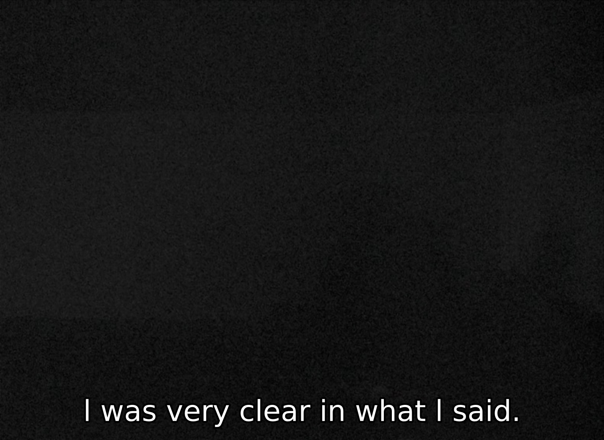
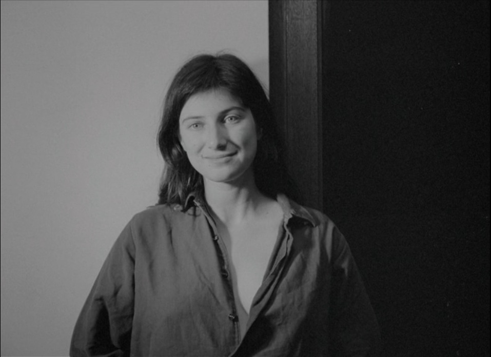
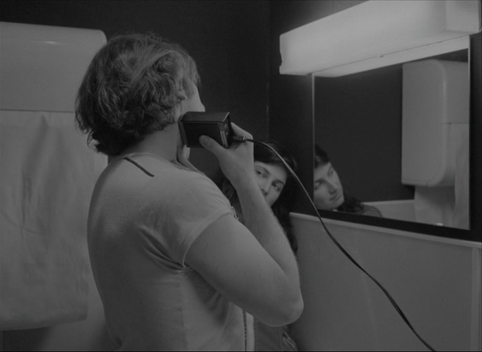
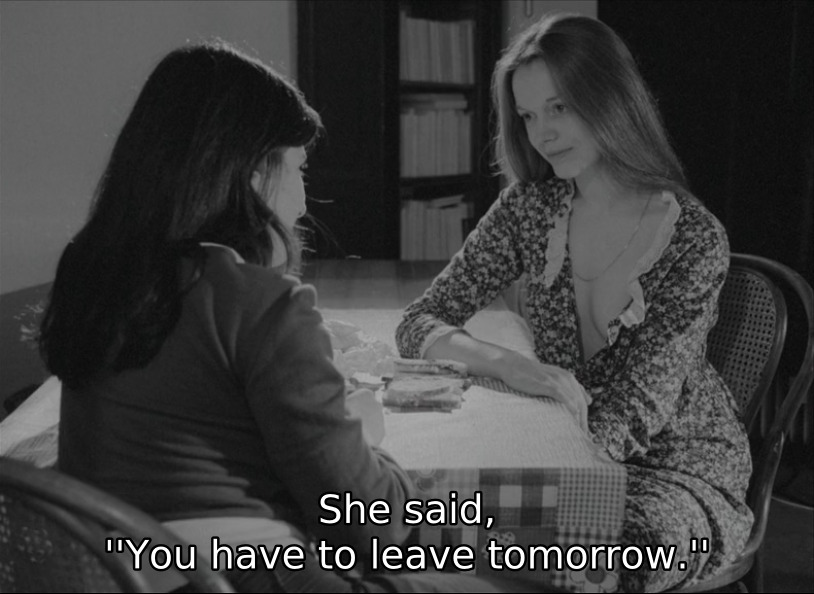

how to listen
Recently I rewatched Chantal Akerman’s 1974 film Je, tu, il, elle at a cinema with some friends. Every time I see it with others I find myself in the position of having to explain to someone why I love this film – and Akerman – as much as I do. So I’d like to try and take some notes on that.
What I find nourishing in Chantal Akerman’s cinema is that her films don’t take listening for granted. It’s very difficult to listen in the sense that Akerman’s films teach. I say “teach” because I do think what’s interesting about these films is how they address you as a listener. They put you in a position where you must listen, and I think people often find this experience uncomfortable. Akerman’s films ask you to listen without judgment, from a place of ambivalent – yet engaged – attention.
There are two things that interest me with respect to Je, tu, il, elle: the position of receptiveness that the film asks me to occupy as a listener, and also that the film addresses and, moreover, addresses me, in the first place.
In the first part of the film we are alone with “Julie” in her small one-room apartment while she writes a letter to a now-ex lover. “I was very clear in what I said,” she narrates. “First it took me three pages to express myself. Then I wrote the same thing in six pages.” Light slowly comes into the room as these lines are spoken, with the murky figure of Julie gradually coming into view as she writes through the night.
Sitting by the window, she continues to write the following day, all the while spooning sugar into her mouth. After a certain point, the spooning becomes compulsive and overtakes the writing act itself. “I wrote eight pages while eating a lot of sugar. Then I crossed things out. And corrected things. A few lines remained.” In writing there is resistance to language. As I write this, I have a tab open in my text editor for scrapped paragraphs and phrases.
The effect of having the night pass through the unlit room, in one static shot, over the course of about fifty seconds surely resembles the subjective compression of time that occurs when one is working intently on something throughout the night. All I can really say about this is that it’s real. You will know this if you’ve ever spent multiple days in succession writing, sleeplessly, a letter to a lost lover.
The first part of Je, tu, il, elle, then, attends to the neurotic struggle to find words to express something. In doing so, it also attends to resistance – to the silences which accompany each of those words. As the scene continues, Julie spends more time eating sugar than writing.
I’ve referred before to a tradition within medieval literary criticism of reading the I of certain texts in terms of its “purely ‘grammatical’ function,” freed from the burdensome weight of history or sex. I wonder if in a text like Je, tu, il, elle if there is some troubling of this fantasy of the I’s deictic function. A sense in which Je remains a kind of placeholder, but one which retains some residue of positional specificity.
There is something of this in what Teresa de Lauretis seems to be after in an old essay of hers called “Rethinking Women’s Cinema.” There, she discusses the ways in which Akerman’s 1975 film Jeanne Dielman “addresses its spectator as a woman, regardless of the gender of the viewers.” The film achieves this, she says, by defining “all points of identification (with character, image, camera) as female, feminine, or feminist.” De Lauretis emphasizes that such a cinema ought to be characterized by its ambivalent positionality. To “address the spectator as female” is posed in contradistinction to questions of representation, to the portrayal of women “positively or negatively.”1
I think there’s something real there, too. I encountered that essay not too long after I’d first been exposed to Akerman’s films, and there was something uncanny about the way de Lauretis’s words seemed to speak to something I’d felt watching Je, tu, il, elle for the first time. I think at the time I described it (very awkwardly) in terms of a certain feeling of openness, or of floating. This was before I’d found the resources and courage to transition, physiologically anyway. Watching Je, tu, il, elle felt like being unhinged from myself in a way that no work of art had ever quite done to me. It was, I think, because of how the film addressed me. It did so by generously offering its Je as a point of reference.


In the second part of the film, Julie leaves her apartment and hitches a ride with a truck driver. They eat at a restaurant in silence, watching an American cop show on a television out of frame. They drive more. They stop at a bar. They drive more. Julie sleeps on and off in the bed behind the driver’s seat, admiring the truck driver’s broad neck and red hair. “I thought I wanted to kiss him.” He wakes her to get up at another stop and she smiles at his touch. They get out of the truck and embrace in the night’s darkness before going to another tavern where they smoke a cigarette and drink a beer, exchanging glances and little smiles. They return to the truck, and now the driver takes her hand and places it on his crotch.
We haven’t, until this point, actually seen Julie or the driver exchange a single word. Now he speaks, no longer making eye contact. “You see this is what matters.” We watch his face in the dark truck cabin as she strokes his cock off-camera, with him giving instructions and little updates on his progress each step of the way. “You obey but you’re afraid.” After he comes he rests his head on the steering wheel for a second, accidentally honking the horn when he gets up. Now he looks at her – and in the darkness of the truck cabin it looks as though he might be looking directly into the camera – and smiles.
There’s a cut. Julie returns into the frame, but only partially, in the foreground. For the first couple of frames her face is barely discernible in the darkness, her presence marked by the white zipper of her jacket. The shaky movement of the truck getting back onto the road brings her face, in profile, from the eyebrows down, back into view, but the focus remains on the man. He lights a cigarette (as one must). “I met my wife out in the country.”
He recounts meeting his wife on the side of the road when he was lost and looking for directions, and how they’d had sex for the first time right then and there. Eventually she becomes pregnant, and he has to get another job. Now they only screw on the weekends. “It’s strange. It’s as if the kid stopped us from screwing.” Sex becomes a “marital duty,” like “bringing home the bacon, or bouncing the kid on my knees.” He talks about picking up girls on the road, having sex with them in the back of the truck. Julie reflects the slightly sheepish admission with the suggestion of a smile.
Julie doesn’t speak to the driver at all during this part of the film. She communicates with her gaze, which never leaves him. Occasionally, she smiles, as if to provide him the permission necessary to continue speaking. The smile comes again when he talks about watching his wife changing his son’s diapers, observing that he already gets erections. In contrast to the little boy, he comes home too tired to have sex. “I must be getting old.” The smile comes again when talks about his daughter. “She’s quite a dish, small as she is, and just eleven.”
The first time I watched this film, I watched it with a man. When we were discussing the film while leaving the theatre he talked about how difficult it was to sit through this scene, how disgusted he was by this truck driver. It made him feel, as I recall, embarrassed by his own maleness. I was surprised by this reaction, I think, because what I’d been so struck by in this scene was its lack of judgment. I’d also, of course, had my share of passing sexual encounters with men and didn’t find anything particularly shocking about this one. It just felt real.
It seemed to me that nothing about the scene required the viewer to identify with this man, or to sympathize with what he was saying. Neither does it ask, however, that the viewer pass judgment on him. The film doesn’t really ask your opinion. It just makes you listen to him. Which is what I did. I took note of his gestures, his smiles. Occasionally, like Julie, I even allowed these smiles to show up on my own face. Sometimes it makes me laugh.
I think noticing the difference between our two responses was an important moment for me. If Je, tu, il, elle is a film that addresses its viewer “as female,” then, for me, this felt quite natural. Actually, it felt nice, in a way that had much less to do with the content of the film than how it addressed me. I hadn’t yet started referring to myself “as female” at that point but I think of my first time watching Je, tu, il, elle as a moment when that began to feel like something that could become possible. That the film addressed me the way it did without checking my gender at the door meant that its address could become a kind of invitation. For my friend, though, maybe it had felt more like a splitting, genuinely dysphoric. Perhaps he’d understood the man’s perspective all too well.
“The less you understand,” Jacques Lacan quips in an early seminar, “the better you listen.”2 Lacan was, of course, addressing a room of psychoanalysts, and was thinking about the position that an analyst assumes when she listens to an analysand. This involves a total receptiveness to the other’s speech – which includes their gestures, their tone of voice, their expressions. It also involves, as it were, being a kind of placeholder, so that one’s presence is itself an occasion for the speaker to continue speaking. If you speak, you do so not to offer an interpretation but to remind the speaker that you consent to their speech.3
I think Je, tu, il, elle is a film that invites the viewer to do this sort of listening. It asks you to listen like a child, who listens all the more intently for their lack of understanding. At the same time, though, it also asks you to assume a particular position from which to listen. Unlike the position of an infant, this position is sexed.
What I find valuable in the specific way I assume a sexed position when watching this film is that I am confronted directly with difference and challenged to observe it – carefully, gently – rather than be threatened by it. I think that’s also what makes this scene queer, in the Bersanian sense anyway, in which the role of art is to show us, imperfectly, our own image so that we might learn “to see difference not as a trauma to be overcome but as a nonthreatening supplement to sameness.”4
I think the film demonstrates a similar mode of engagement in its glances, its smiles, its attention to gesture. This mode of attention is one which of course makes Jeanne Dielman so remarkable. While in that film there is a lovingly meticulous attention to “the daily gestures of a woman,” here there is a similarly loving attention paid to the gaze of a woman observing, with rapt curiosity, the gestures of a man.5 The middle section of Je, tu, il, elle at once positions the viewer to identify with Julie – the Je of the film’s title – while also quite powerfully underlining the difference between Julie and the driver.
In their final scene together, Julie watches the truck driver wash up in the bathroom. The man stands in front of a mirror, shaving his face with an electric razor while Julie leans against the wall in the corner. Her face is, for the most part, partially obscured by his arm movements, but with the assistance of the mirror – and in the much brighter lighting of the men’s room – we can follow the movement of her eyes. She mirrors him: where he looks in his reflection, she looks too, though at no point does she look into the mirror in order to do so. When he looks away from his reflection, turning his attention downward to turn off the shaver and clean it out, her gaze also moves downwards, towards his hands. When he walks away from the sink to go to a urinal on the other side of the bathroom, the camera moves in the opposite direction from him, revealing a second mirror. Now we watch Julie, in the mirror on the left, watching the man, in the mirror on the right, taking a piss in the urinal. He returns to the sink to finish washing up and playfully taps her on the nose.


There’s an abrupt cut. Julie stands at the door of an apartment building, speaking into an intercom. “C’est moi.” She’s let in, ascends an elevator and enters a woman’s apartment. “I don’t want you to stay,” the woman says. She begins to leave. As she starts to get in the elevator, she says she’s hungry. The woman lets her back inside, makes her a sandwich, which she eats. Julie smiles and nods. “Encore.” The woman makes Julie two more sandwiches. She doesn’t eat them. Instead, she begins to unbutton the woman’s blouse. There isn’t much more to say after that.
